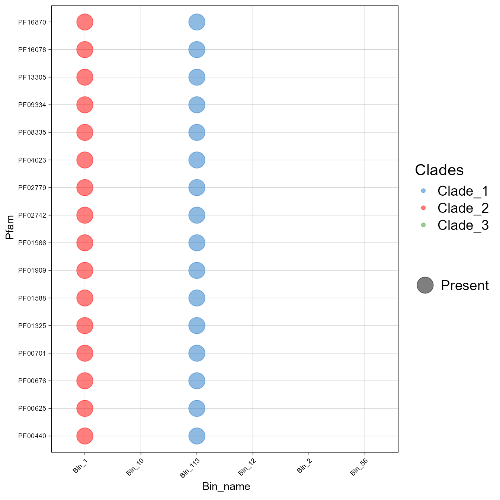
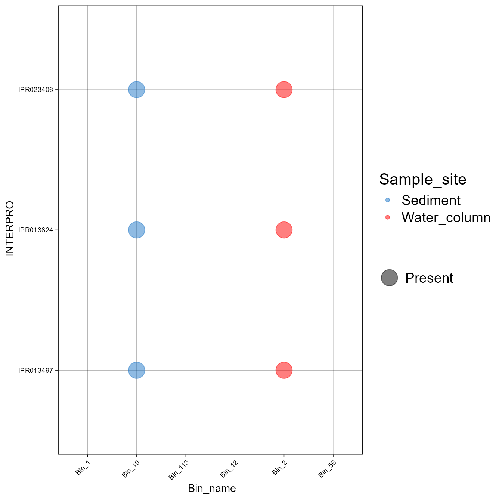
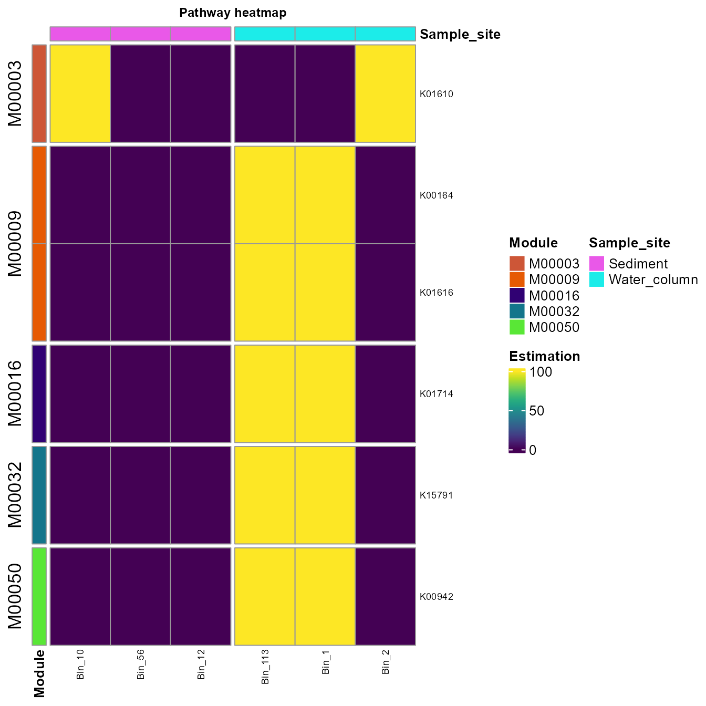

Explore InterProScan profile
Source:vignettes/Explore_InterProScan_profile.Rmd
Explore_InterProScan_profile.RmdFirst, load the rbims package.
Example with PFAM database
First, I will read the InterProScan output in a long format and extract the PFAM abundance information.
If you want to follow this example, you can download the use rbims test file.
interpro_pfam_profile<-read_interpro(data_interpro = "../inst/extdata/Interpro_test.tsv", database="Pfam", profile = F)Let’s change de column name “PFAM” to “Pfam” to agree with ´Rbims´:
You can use the subsetting functions to create subsets of the InterPro profile table. Here, we will extract the most important PFAMs, and we need to use them as an input, not the profile output from read_interpro.
The function get_subset_pca calculates a PCA over the data to find the PFAM that explains the variation within the data.
important_PFAMs<-get_subset_pca(tibble_rbims=interpro_pfam_profile,
cos2_val=0.95,
analysis="Pfam",
pca = "Individual")
#> Contribution of the first dimention is higher than 0.97.
#> if the data frame has 0 observations, try a different cos value.
head(important_PFAMs)
#> # A tibble: 6 × 8
#> Pfam domain_name Bin_10 Bin_12 Bin_56 Bin_113 Bin_1 Bin_2
#> <chr> <chr> <int> <int> <int> <int> <int> <int>
#> 1 PF00440 Bacterial regulatory protein… 0 0 0 1 1 0
#> 2 PF13305 WHG domain 0 0 0 1 1 0
#> 3 PF00701 Dihydrodipicolinate syntheta… 0 0 0 1 1 0
#> 4 PF16078 2-oxoglutarate dehydrogenase… 0 0 0 1 1 0
#> 5 PF00676 Dehydrogenase E1 component 0 0 0 1 1 0
#> 6 PF02779 Transketolase, pyrimidine bi… 0 0 0 1 1 0The distance argument
Let’s plot the results.
plot_heatmap can help explore the results. We can perform two types of analyses; if we set the distance option as TRUE, we can plot to show how the samples could cluster based on the protein domains.
plot_heatmap(important_PFAMs, y_axis=Pfam, analysis = "INTERPRO", distance = T)
If we set that to FALSE, we observed the presence and absence of the domains across the genome samples.
plot_heatmap(important_PFAMs, y_axis=Pfam, analysis = "INTERPRO", distance = F)
#> Warning: The input is a data frame, convert it to the matrix.
We can also visualize using a bubble plot.
plot_bubble(important_PFAMs,
y_axis=Pfam,
x_axis=Bin_name,
calc = "Binary",
analysis = "INTERPRO",
data_experiment = metadata,
color_character = Clades)
Example with INTERPRO database
First, I will read the InterProScan output in a wide format and extract the PFAM abundance information.
interpro_INTERPRO_profile<-read_interpro(data_interpro = "Interpro_test.tsv", database="INTERPRO", profile = F)
head(interpro_INTERPRO_profile)We are going to look for the InterProScan IDs that conform the
DNA topoisomerase 1. To do this, we will create a vector of
the IDs associated to that enzyme.
DNA_topoisomerase_1<-c("IPR013497", "IPR023406", "IPR013824")With the function get_subset_pathway we can create a subset of the INTERPRO table.
DNA_tipo_INTERPRO<-get_subset_pathway(interpro_INTERPRO_profile, type_of_interest_feature=INTERPRO,
interest_feature=DNA_topoisomerase_1)
head(DNA_tipo_INTERPRO)
#> # A tibble: 3 × 8
#> INTERPRO domain_name Bin_10 Bin_12 Bin_56 Bin_113 Bin_1 Bin_2
#> <chr> <chr> <int> <int> <int> <int> <int> <int>
#> 1 IPR013497 DNA topoisomerase, type IA… 1 0 0 0 0 1
#> 2 IPR023406 DNA topoisomerase, type IA… 1 0 0 0 0 1
#> 3 IPR013824 DNA topoisomerase, type IA… 1 0 0 0 0 1We can create a bubble plot to visualize the distribution of these enzymes across the bins.
plot_bubble(DNA_tipo_INTERPRO,
y_axis=INTERPRO,
x_axis=Bin_name,
calc = "Binary",
analysis = "INTERPRO",
data_experiment = metadata,
color_character = Sample_site)
Example with KEGG database
First, I will read the InterProScan output in a long format and
extract the KEGG information. When you use the KEGG option,
the profile option is disabled.
interpro_KEGG_long<-read_interpro(data_interpro = "Interpro_test.tsv", database="KEGG")
head(interpro_KEGG_long)
#> # A tibble: 6 × 3
#> Scaffold_full_name Pathway Enzyme
#> <chr> <chr> <chr>
#> 1 Bin_113-scaffold_66_c1_109 map00261 ec:4.3.3.7
#> 2 Bin_113-scaffold_66_c1_109 map00300 ec:4.3.3.7
#> 3 Bin_1-scaffold_21_c1_109 map00261 ec:4.3.3.7
#> 4 Bin_1-scaffold_21_c1_109 map00300 ec:4.3.3.7
#> 5 Bin_2-scaffold_3_c1_159 map00010 ec:4.1.1.49
#> 6 Bin_2-scaffold_3_c1_159 map00020 ec:4.1.1.49Mapping INTERPRO to KEGG database
We can use the mapping_ko function here, to get the extended KEGG table.
interpro_map<-mapping_ko(tibble_interpro = interpro_KEGG_long)
head(interpro_map)
#> # A tibble: 6 × 19
#> Module Module_description Pathway Pathway_description Cycle Pathway_cycle
#> <chr> <chr> <chr> <chr> <chr> <chr>
#> 1 M00016 Lysine biosynthesis, s… map002… Monobactam biosynt… NA NA
#> 2 M00525 Lysine biosynthesis, a… map002… Monobactam biosynt… NA NA
#> 3 M00526 Lysine biosynthesis, D… map002… Monobactam biosynt… NA NA
#> 4 M00527 Lysine biosynthesis, D… map002… Monobactam biosynt… NA NA
#> 5 M00016 Lysine biosynthesis, s… map003… Lysine biosynthesis NA NA
#> 6 M00525 Lysine biosynthesis, a… map003… Lysine biosynthesis NA NA
#> # ℹ 13 more variables: Detail_cycle <chr>, Genes <chr>, Gene_description <chr>,
#> # Enzyme <chr>, KO <chr>, rbims_pathway <chr>, rbims_sub_pathway <chr>,
#> # Bin_113 <int>, Bin_1 <int>, Bin_2 <int>, Bin_10 <int>, Bin_56 <int>,
#> # Bin_12 <int>We can plot all the KOs and the Modules to which they belong. An
important thing here is that we will set analysis = "KEGG"
despite this workflow started with the InterProScan output in
analysis.
plot_heatmap(tibble_ko=interpro_map,
data_experiment = metadata,
y_axis=KO,
order_y = Module,
order_x = Sample_site,
split_y = TRUE,
analysis = "KEGG",
calc="Percentage")